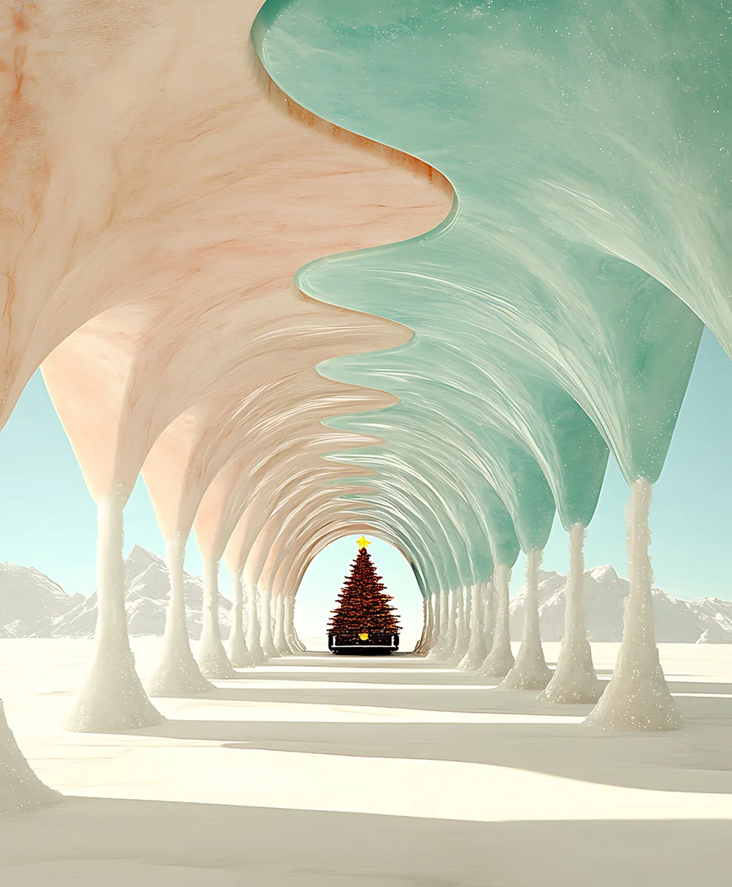

Images. Stories. Moments.
New tools.
Original stories.
Made to stay.
01 / Our Craft
Trained on Film Sets.
연출가와 아트디렉터로 현장에서 일해 온 방식 그대로
공간과 빛, 소품 하나까지 화면에 담기는 모든 레이어를 설계합니다.

 카톡 상담
카톡 상담01 / Our Craft
연출가와 아트디렉터로 현장에서 일해 온 방식 그대로
공간과 빛, 소품 하나까지 화면에 담기는 모든 레이어를 설계합니다.
